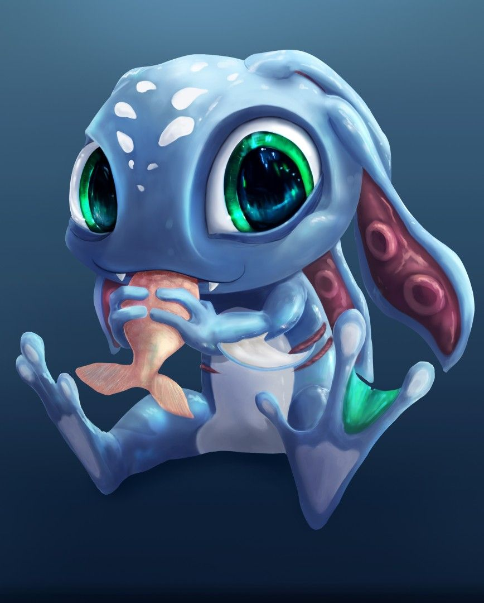

Fizz es un yordle anfibio que habita entre los arrecifes que rodean a Aguasturbias. A menudo recupera y regresa las monedas lanzadas al mar por capitanes supersticiosos, pero hasta los marineros más escépticos saben que no deben contrariarlo; hay muchas historias de aquellos que subestimaron a este resbaloso personaje. 